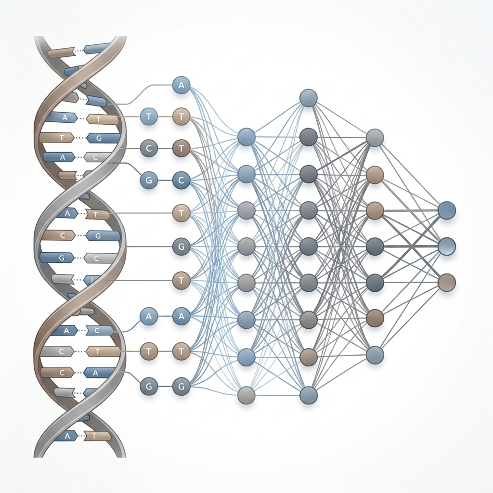
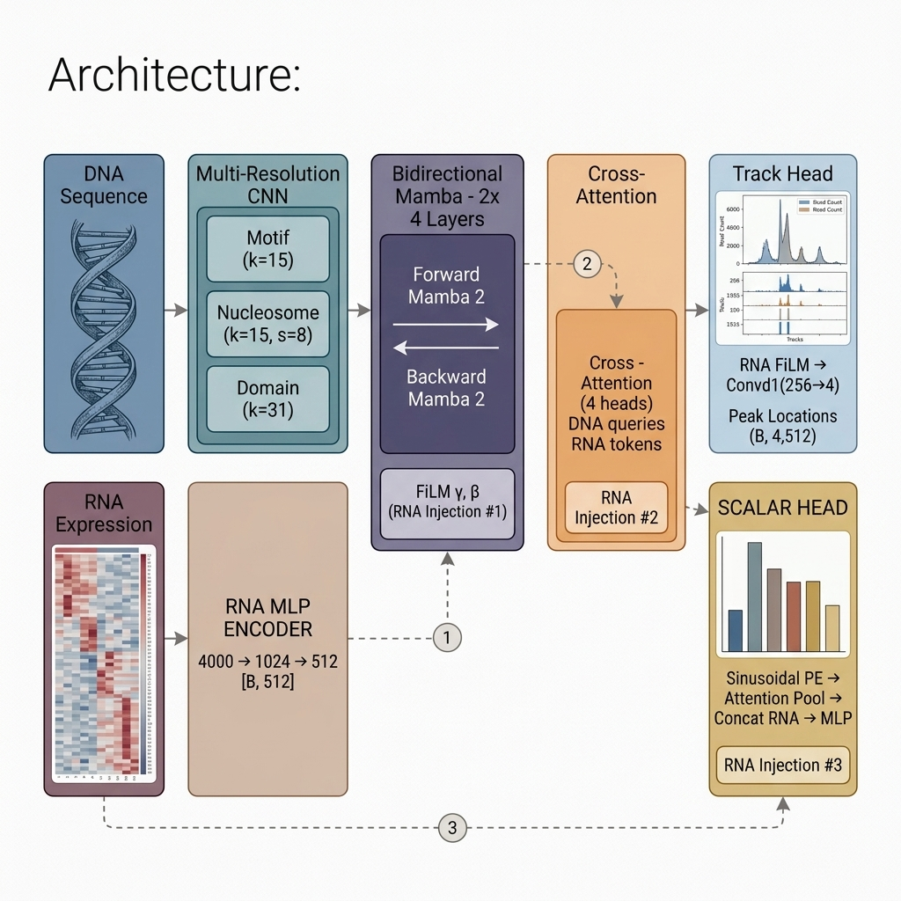
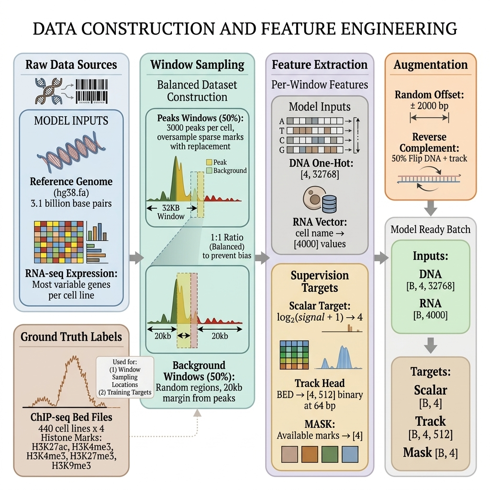

🤖 Deep-H¶
A cell-type-aware deep learning framework that predicts histone modification landscapes from DNA sequence and RNA expression profiles.

What is Deep-H?¶
Deep-H is an advanced deep learning framework designed to predict four key histone modifications across the genome for any given cell type. By integrating a 32,768 bp DNA sequence window with a cell line's specific RNA-seq expression profile (focusing on the top 4,000 most variable genes), Deep-H accurately outputs:
- Scalar predictions - Estimating the peak intensity for each histone mark.
- Spatial track predictions - Generating a detailed binary map that pinpoints exactly where these peaks occur at a precise 64 bp resolution.


Target Histone Marks¶
H3K27ac
Active enhancers & promoters. This acetylation mark opens chromatin, enabling transcription factor binding. Found at active regulatory elements across the genome.
ActivatingH3K4me3
Active promoters. Trimethylation of H3K4 marks transcription start sites (TSS) of actively transcribed genes. Forms sharp, narrow peaks.
ActivatingH3K27me3
Polycomb repression. This repressive mark is deposited by PRC2 to silence developmental genes. Forms broad domains spanning tens of kilobases.
RepressiveH3K9me3
Constitutive heterochromatin. Marks permanently silenced regions like centromeres and transposable elements. Prevents spurious transcription.
RepressiveKey Numbers¶
Why Deep-H?¶
Cell-Type Awareness
Unlike models that only see DNA, Deep-H conditions on RNA expression at three levels of the network - enabling it to predict histone marks for any cell type, not just the ones it was trained on.
Bidirectional State Space Model
Deep-H uses Mamba-2, a state-of-the-art selective state space model, for O(L) sequence processing. Bidirectional scanning captures both upstream and downstream regulatory context.
Dual-Head Architecture
Simultaneously predicts scalar intensity (how strong is the signal?) and spatial track (where exactly are the peaks?) - giving researchers both the big picture and the fine details.
Architecture at a Glance¶
flowchart LR
A["🧬 DNA<br/>32,768 bp"] --> B["Multi-Resolution<br/>CNN Stem"]
B --> C["Cell-Conditioned<br/>BiMamba-2 (×4)"]
D["📊 RNA<br/>4,000 genes"] --> E["RNA MLP<br/>Encoder"]
E -->|"FiLM γ,β"| C
C --> F["Cross-Attention"]
E -->|"RNA Tokens"| F
F --> G["🎯 Scalar Head<br/>Peak Intensity"]
F --> H["📍 Track Head<br/>Peak Location"]
style A fill:#FFE0E0,stroke:#FF6B6B,color:#333
style D fill:#D4F5F2,stroke:#4ECDC4,color:#333
style B fill:#DBEAFE,stroke:#60A5FA,color:#333
style C fill:#EDE9FE,stroke:#A78BFA,color:#333
style E fill:#D1FAE5,stroke:#34D399,color:#333
style F fill:#FFF8D6,stroke:#FFD93D,color:#333
style G fill:#FFE4E6,stroke:#FB7185,color:#333
style H fill:#FFF3E0,stroke:#FDBA74,color:#333Quick Start¶
# Clone the repository
git clone https://github.com/shreya1/hist4.1.git
cd hist4.1
# Install dependencies
pip install -r requirements.txt
# Run training
python train.py
Built with 💜 using PyTorch, Mamba-2, and MkDocs Material